湯類
- 虱目魚肉湯$65
- 魚肚湯$105
- 肚丸湯$125
- 魚皮湯$75
- 皮丸湯$95
- 魚丸湯$25
- 貢丸湯$25
- 蛤仔湯$50
- 蚵仔湯$70
- 魚頭湯（2粒）$35
- 魚腸湯$60
- 鱔魚湯$100
- 海產湯$100
台南北區在地人氣老店
從民德路開始，
每天熬煮第一鍋魚湯，
用最簡單的料理，
保留虱目魚最純粹的鮮味。
Since 19XX
台南民德路在地老店
民德的故事
在台南民德路，
每天清晨六點，
第一鍋魚湯開始冒著熱氣。
一碗魚湯、
一碗肉燥飯，
是許多台南人最熟悉的早餐味道。
簡單的魚湯，
香氣四溢的肉燥飯，
以及金黃酥脆的煎魚肚，
成為許多人記憶中的台南早餐。
民德相信，
真正的美味，
來自數十年如一日的堅持。
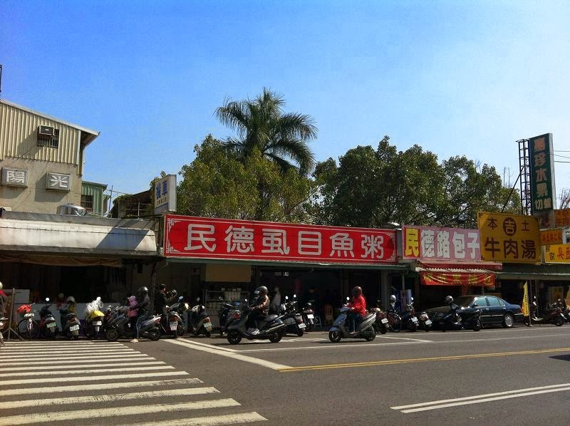
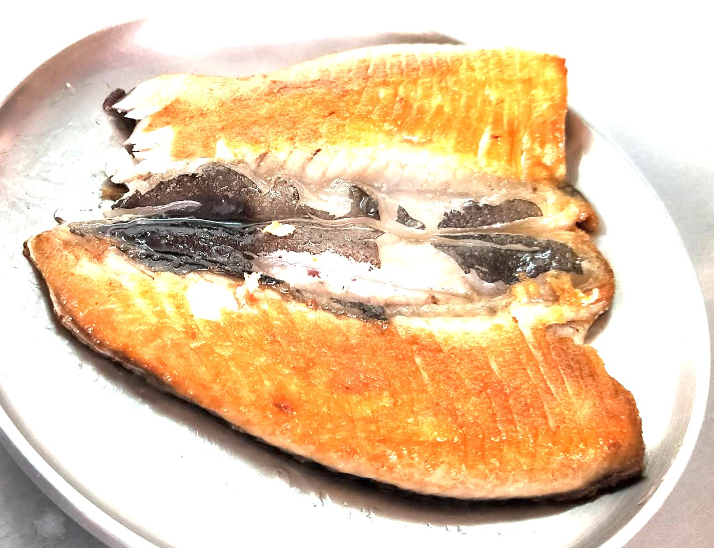
招牌料理
金黃酥香，
外酥內嫩，
是許多老饕來民德必點的一道料理。
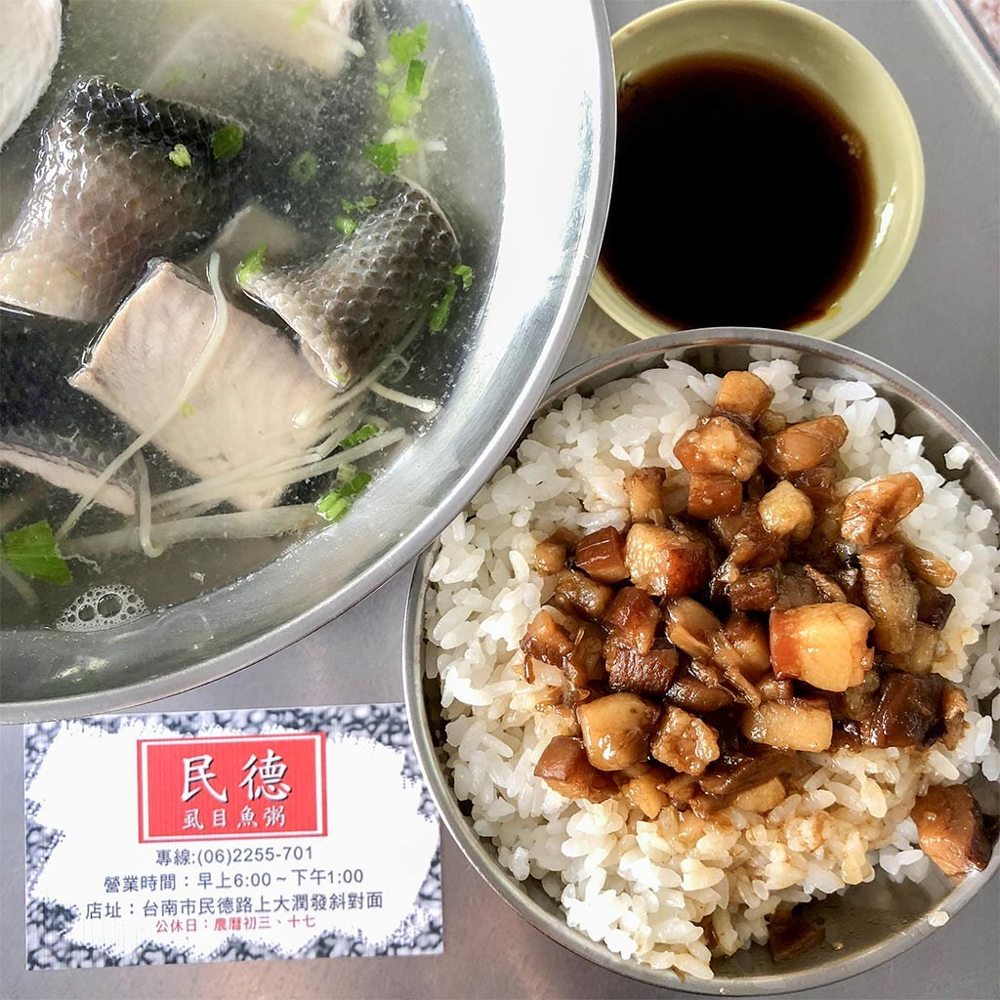
台南人的早餐
一碗魚湯，
一碗肉燥飯，
就是台南人的早晨。
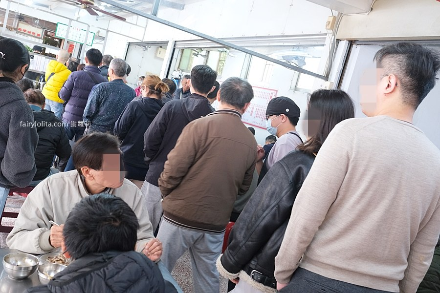
店內人氣
假日與熱門時段，
店內經常座無虛席。
這份熱鬧，
已成為民德路最熟悉的風景。
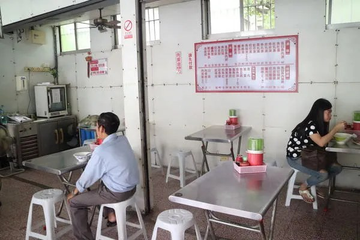
完整菜單
依店家文字版菜單整理，品項左側為名稱、右側為價格。

最新公告
照片、菜單與聯絡資訊已整理為正式官網版面，後續公告可直接修改此區 HTML。
若遇市場休市、天候或臨時調整，將優先於 Facebook 粉絲專頁更新。
每日 06:00 開始供應，熱門時段人潮較多，實際供應依現場狀況為準。
照片專區
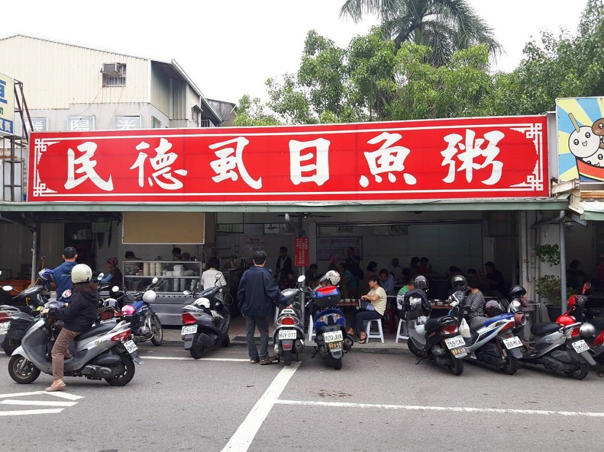
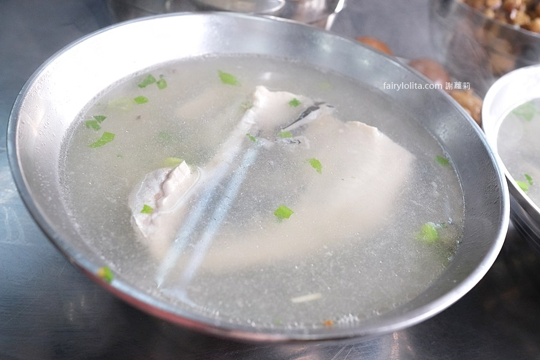
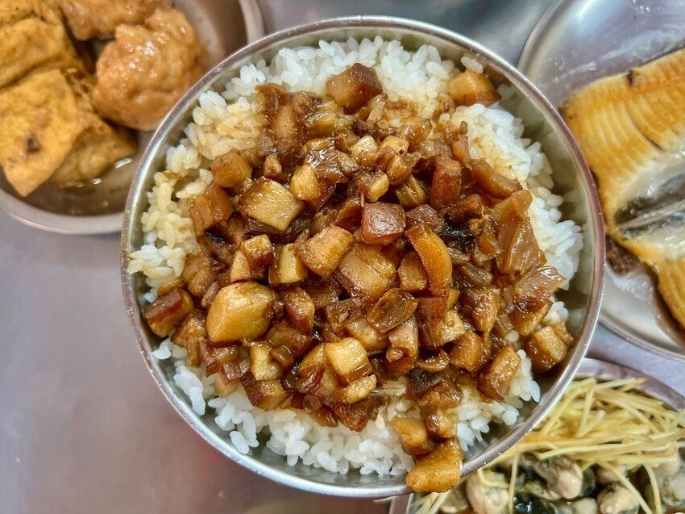
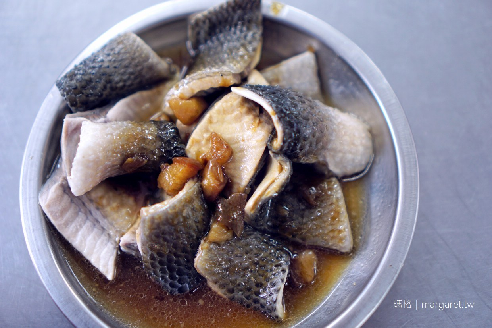
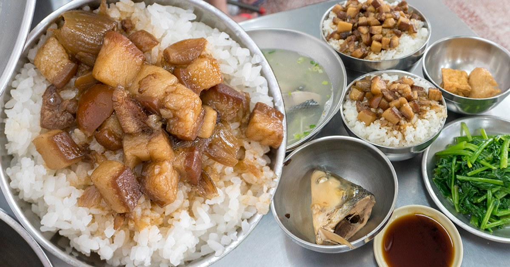

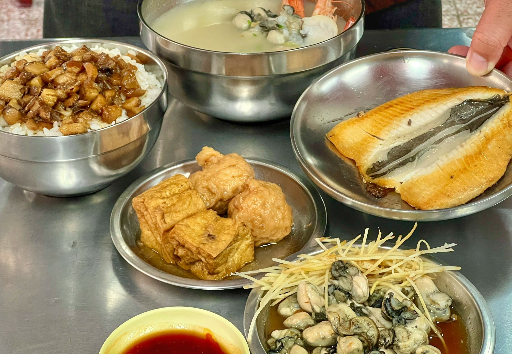
Google 評價
★★★★★
魚湯很鮮甜，
肉燥飯超香，
每次回台南一定要來。
★★★★★
假日人很多，
但翻桌很快，
值得排隊。
★★★★★
煎魚肚外酥內嫩，
完全沒有腥味，
是每次必點。
聯絡我們